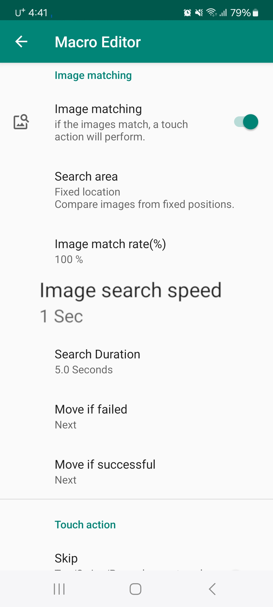
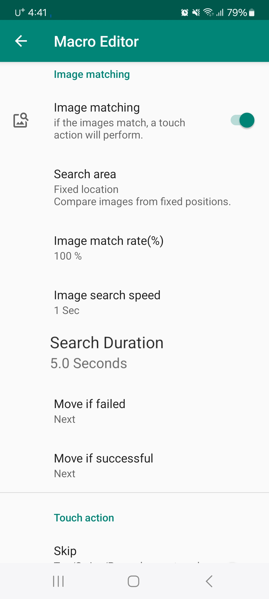

이미지 검색 속도
빠르게 변하는 화면에서 이미지를 찾으려면 이미지 검색 속도를 빠르게 해야 합니다. 이미지 검색 속도가 높을수록 이미지 비교를 더 많이 하고 배터리 소모도 많아지므로 적절한 속도로 설정하세요.

이미지 검색 시간
얼마나 오래동안 이미지를 찾을지 설정합니다. 검색 시간을 2초로 설정하면 2초 동안 이미지를 찾고 일치하는 이미지가 없을 경우 실패로 처리합니다.
